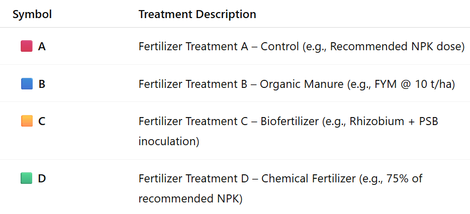

Completely Randomised Design
In the 1920s, statistician Ronald A. Fisher made significant contributions to the development of the Completely Randomized Design (CRD), which was first used in the early 20th century. Fisher developed this design to enhance agricultural studies, particularly to identify subtle yet significant variations in crop yields under various fertilizer treatments. His novel approach was to prevent bias and enable reliable statistical analysis through analysis of variance (ANOVA) by randomly assigning treatments to experimental units (like land plots). In order to prevent bias and enable reliable statistical analysis using analysis of variance (ANOVA), he invented the practice of randomly allocating treatments to experimental units.
In this design,experimental units are randomly assigned to treatments without any systematic bias, ensuring that every unit has an equal probability of receiving any given treatment. This random assignment helps counter potential biases and addresses the inherent variability among experimental units, making comparisons between treatments impartial. In order to account for natural variation in soil and environment, the first famous instances involved agricultural field trials in which adjacent plots were randomly assigned to different crop kinds or fertilizer treatments. Agricultural field trials were the first well-known instances, in which adjacent plots were randomly assigned to different crop varieties or fertilizer treatments to account for inherent soil and environmental variance.
Although CRD is generally not advised for heterogeneous settings, it is especially appropriate when the experimental material is homogeneous, as in laboratory or greenhouse investigations. Due to its ease of use and efficiency, CRD has established itself as a key instrument in experimental statistics and is still essential in domains including industrial engineering, quality control analysis, medicine, and agriculture.

Key Characteristics
Here are the main features of the design - hover or click each point to see more information.
- üé≤ Random allocation
- üåø Homogeneous conditions
- üîÑ Flexibility
- üìä Simple analysis
When to Use CRD? Explore Each Situation
Below given are the appropriate situations to be used for CRD, please click on each icon to see more information
üß™ Laboratory Experiments
Best used under controlled conditions for reproducible results.
üå± Greenhouse Experiments
Ideal for experiments where environmental uniformity is crucial.
üêÑ Animal Feeding Trials
Works well when animals are homogeneous in age, breed, or weight.
ü™¥ Pot Experiments
Suitable for experiments with uniform soil and environmental factors.
Advantages & Disadvantages of CRD
Layout Example
Suppose we’re testing 4 fertilizer treatments (A, B, C, D) with 5 replications each (20 experimental units total) the CRD Layout will be as given below.

CRD Linear Model
The mathematical form of the Completely Randomised Design (CRD) is very important because it gives a precise, structured way to describe and analyze the experiment statistically. This helps us understand that what we observe is not just random - it’s a combination of systematic treatment differences and random variation.
The CRD linear model allows us to partition the total variation in the data into:
Variation due to treatments
Variation due to random error
The model assumes: Errors are independent, normally distributed, and have equal variance. These assumptions make it possible to apply valid statistical tests, confidence intervals, and predictive models.
- Yij = observation for the jth unit receiving the ith treatment
- μ = overall mean
- τi = effect of the ith treatment
- εij = random error (assumed ~ N(0, σ²))
- i = 1, 2, …, t (number of treatments)
- j = 1, 2, …, r (number of replications)
ANOVA Table for Completely Randomized Design (CRD)
| Source of Variation | Degrees of Freedom (df) | Sum of Squares (SS) | Mean Square (MS) | F Ratio |
|---|---|---|---|---|
| Treatments | ( t - 1 ) | SST | MST | ( ) |
| Error (Residual) | ( N - t ) | SSE | MSE | |
| Total | ( N - 1 ) | TSS |
Example
Let’s explore some practical situations in agricultural research where the Completely Randomised Design, also known as the CRD, is applied.
Study Context
- Ten mango cultivars, each representing a different treatment, are being evaluated by a horticultural scientist. Alphonso, Kesar, Dasheri, Himsagar, Chausa, Badami, Safeda, Bombay, Langra, and Totapuri are among the kinds that are included. Thirty observations are obtained by replicating each variety three times. Each response variable (yield, Obs1, Obs2, FW) can be analyzed using a Completely Randomized Design (CRD) to see whether the mango varieties differ significantly from one another.Example1
- The impact of four chemical treatments (C1 through C4) on a response variable that is measured over time is being assessed by a chemist. There are four replications of each treatment, for a total of 16 observations per time point. On Day 1, Day 3, Day 6, Day 7, and Day 15, observations were made. There are four replications for every treatment since each treatment is repeated four times. An Arcsine transformation can be tested using the proportion data in the final column. To ascertain whether the four chemical treatments differ significantly from one another, a Completely Randomized Design (CRD) can be employed to examine each response variable or time point independently.Example2

- An engineer is evaluating three different shapes of an instrument (Wedge, Sphere, and Square) to study their effect at different depths. Each shape is tested 10 times, giving a total of 30 observations. Observations were recorded at 4 depths: 1mm, 2mm, 3mm, and 4mm. Since each shape is replicated 10 times, there are 10 replications per shape. A Completely Randomised Design (CRD) can be used to analyze each depth separately to determine whether there are significant differences among the three shapes of the instrument. Example3

Theory
The theory of the Completely Randomized Design can be read below, or if you’re a non-statistician who is simply interested in the practical elements, you can go straight to Section 10, where we’ve provided a real-world example. The essential procedures for carrying out the Completely Randomized Design are described in the theoretical section. Comprehending these ideas will enable you to do the analysis with assurance and clarity.
Assumptions
In order to guarantee the validity and dependability of experimental outcomes, CRD (Completely Randomized Design) is predicated on a number of essential assumptions. Maintaining these fundamental parameters throughout the experiment is crucial for the integrity of statistical analysis, particularly when employing ANOVA.
Independence : In experimental design the outcome (response) of one experimental unit is not affected by or connected to the outcome of another unit
Random Assignment : In experimental design, randomization is the process of allocating treatments to experimental units at random, ensuring that each unit has an equal chance of receiving any given treatment
Homogeneity of Variance : Also referred to as homoscedasticity, the variance of mistakes should be the same for every group or treatment
Normality : Each treatment’s residuals or errors should have a normal distribution. For ANOVA results to be valid, this is necessary
Additivity : There is no interaction between unaccounted for factors; the effects in the model are additive. This indicates that the overall mean, treatment effect, and random error add up to the observed result
Hypotheses
The Completely Randomized Design (CRD) evaluates the following hypotheses:
All treatment means are equal, indicating that the treatments have no significant effect on the response variable
\[H_0 : \mu_1 = \mu_2 = \cdots = \mu_t\]
At least one treatment mean (\(\mu_i\)) is significantly different from the others, suggesting that treatments have an effect on the response variable.
\[H_1 : \text{At least one } \mu_i \text{ differs}\]
The Test Statistic
\[ F = \frac{\text{Mean Square due to Treatments (MST)}}{\text{Mean Square due to Error (MSE)}} \]
This statistic is used to determine whether there are significant differences among the treatment means.
Correction for Ties
If the assumptions of ANOVA are slightly violated, or if there are unequal sample sizes (missing values) in the dataset, the F-statistic can be adjusted using Aitken’s adjustment or a corrected mean square approach:
\[ F_{adjusted} = \frac{\text{Corrected Mean Square Between Treatments}}{\text{Corrected Mean Square Error}} \] This ensures that the test remains valid under minor violations of CRD assumptions.
Interpreting the Results
In a Completely Randomised Design (CRD), the analysis of variance (ANOVA) is used to test whether there are significant differences among the treatment means. The test statistic, F, follows an F distribution with two sets of degrees of freedom: the numerator degrees of freedom (k-1), where k is the number of treatments, and the denominator degrees of freedom (N-k), where N is the total number of experimental units. To determine if the null hypothesis - that all treatment means are equal - can be rejected, the calculated F value from the ANOVA table is compared to the critical F value obtained from an F distribution table based on the degrees of freedom and the chosen significance level (α). If the computed F value exceeds the critical value, the null hypothesis is rejected, indicating that at least one treatment mean differs significantly from the others. However, ANOVA alone does not indicate which specific treatments differ. Therefore, if a significant difference is detected, multiple comparison tests such as Tukey’s HSD or Fisher’s LSD are performed to make pairwise comparisons between treatments and identify precisely where the differences exist.
Post-hoc test
When the ANOVA in a Completely Randomised Design (CRD) is significant, the following post hoc tests are commonly used for pairwise comparisons: Tukey’s Honestly Significant Difference (HSD) test, and Fisher’s Least Significant Difference (LSD) test. These tests help identify which specific treatment means differ from each other, addressing the limitation of ANOVA in not indicating the exact sources of variation.
Tukey’s Test
Let’s explore Tukey’s Honestly Significant Difference (HSD) test as it applies to Completely Randomized Design (CRD). After conducting an ANOVA on your CRD experiment, which tells you if there is any significant difference among group means overall, Tukey’s HSD test helps you find out exactly which pairs of treatment means differ significantly.
The main idea is that Tukey’s HSD compares all possible pairs of treatment means while controlling the overall Type I error rate, so you avoid false positives when making multiple comparisons. It calculates a critical value based on the number of treatments, degrees of freedom for error (from ANOVA), and the mean square error.
In CRD, this method works well because treatments are assigned completely at random and the error variance is assumed homogeneous. Tukey’s HSD uses the within-group variance from ANOVA (Mean Square Error) and the number of replicates per treatment to assess whether the difference between any two means is “honestly significant.”
LSD (Least Significant Difference) Test
The Least Significant Difference (LSD) test is a post-hoc statistical procedure used in the context of a Completely Randomized Design (CRD) to identify which specific treatment means differ significantly after a one-way ANOVA has indicated an overall significant effect. When the ANOVA F-test rejects the null hypothesis, it implies that at least one treatment mean is different, but it does not specify which pairs differ. The LSD test addresses this by performing pairwise comparisons between treatment means using a critical difference threshold.
The LSD is calculated as \[ \text{LSD} = t_{\alpha/2, \, df_{\text{error}}} \sqrt{\frac{2 \cdot \text{MSE}}{n}} \] where, t_{/2, , df_{}} is the critical t-value at the chosen significance level (e.g., 0.05), MSE is the mean square error from the ANOVA, and n is the number of replications per treatment under equal sample sizes. Any absolute difference between two treatment means exceeding this LSD value is declared statistically significant. The test assumes homogeneity of variances and is most valid when the overall F-test is significant, as it uses a pooled error term from all treatments, making it more powerful but also more prone to Type I errors when multiple comparisons are made without adjustment. Therefore, while the LSD test is simple and sensitive, it should be applied cautiously, preferably for pre-planned comparisons or adjacent means in ordered arrays, to avoid inflated error rates due to data snooping.
p Adjustment Method
The p adjustment method used for CRD in RAISINS is none.
Getting started in RAISINS
RAISINS (R and AI Solutions in INferential Statistics) is an online platform designed to make agricultural research data analysis easier. RAISINS doesn’t need to be downloaded; it’s entirely online. It provides robust, user-friendly statistical tools by combining the strengths of R, Python, and AI. The Department of Agricultural Statistics, College of Agriculture, Vellayani, Kerala Agricultural University, is providing mentorship to STATOBERRY LLP as it develops the platform.
Head to www.raisins.live where you can access various analytical modules. You can access the Completely Randomised Design module from the analysis tools under Analysis of Experiments.

A working example
We’ll walk you through every stage of the Completely Randomised Design step by step. Let’s start by examining how the analysis can be performed using Example 1, which is covered in Section 7.1. For clarity, here’s a quick recap of the example: Ten mango cultivars each representing a different treatment, are being evaluated by a horticultural scientist. Alphonso, Kesar, Dasheri, Himsagar, Chausa, Badami, Safeda, Bombay, Langra, and Totapuri are among the kinds that are included. Thirty observations are obtained by replicating each variety three times.
The dataset format required for analysis in RAISINS is illustrated in Figure 1.
Preparing data in RAISINS is simple and straightforward. Detailed instructions are provided in Section 10.7. Additionally, model datasets are available within the app for testing purposes, as explained in Section 10.10. See how dataset is arranged for analysis Figure 1.

Once the dataset is ready, head onto the Analysis tab in RAISINS and click on Browse and upload the data in csv, xls or xlsx format. After uploading select the treatment and variables of interest (multiple variables can also be selected) and then click on Run Analysis. A complete publication ready results and tables will be generated. Results can be downloaded as pdf, html or word format. See Figure 2 for marked Analysis window in RAISINS.

Results
RAISINS generates result table in the format given in Figure 3 and Figure 4 after the analysis. The first result table is Treatment and Error Mean Squares (ANOVA) table containing source of variation, degrees of freedom, mean squares provided for each character. The second result table is detailed tabular representation with multiple comparisons containing mean ± SD, F value, p value, CD, MSE, SE(m), SE(d), CV(%), Cohen’s F. **indicates significance at 1% level and * indicates significance at 5% level.
RAISINS generates result table in the format given in Figure 3 and Figure 4 after the analysis.

From the above result table Figure 3 significant varietal differences were observed for yield and Obs1 traits, indicating that the performance of mango varieties differed significantly for these parameters.Obs2 and FW showed non-significant differences, meaning performance was relatively uniform across varieties for these traits.
From the above result table Figure 4, Alphonso and Totapuri recorded higher yields, suggesting they may be better-performing varieties under the given conditions.The lower MSE for Obs1 indicates that the replicates of that variable are more consistent. SE(m) for yield = 59.53, shows moderate precision in yield mean estimation. SE(d) = 84.19, indicates the uncertainty when comparing two treatment means. The low to moderate CV values indicate that the experiment was conducted with reasonable accuracy and reliability.
Customization tabs
In RAISINS, you can easily customize your analysis by adjusting settings such as choice of post-hoc tests, level of significance, digits after decimal, and font style. These options help tailor the results to your specific needs, as shown in Figure 5.

Plots and graphs
Do follow the below given steps for making plots and graphs for Completely Randomised Design
Step 1: Click Run Analysis - your results appear instantly, organized and ready to review.
Step 2: Open the Plots & Graphs tab to find all CRD plots in one place.
Step 3: Use the ⚙️ gear icon to customize your plots - colors, labels, styles, and more!
Step 4: Export your plots in high-quality PNG (300 dpi) for reports or presentations.
RAISINS transforms analysis into a visual, interactive, and effortless journey.
Customizing plots
RAISINS provides users various customization features for the plots to enhance the visualization according to the requirement of the user. Click on the below images to get a clear idea on the customizing features.


×
Multivariate and AI
In a Completely Randomised Design (CRD), treatments are assigned randomly to experimental units, ensuring that each unit has an equal chance of receiving any treatment. This design is commonly used to compare the effects of different treatments on a single response variable.
In our example, when ten mango cultivars - Alphonso, Kesar, Dasheri, Himsagar, Chausa, Badami, Safeda, Bombay, Langra, and Totapuri - are evaluated by a horticultural scientist. Each variety represents a treatment and is replicated three times, resulting in thirty observations in total. Data are recorded for four response variables: Yield, Obs1, Obs2, and Fruit Weight (FW).
Each of these variables can be analyzed separately under the CRD framework to determine whether the mango varieties differ significantly for individual traits. However, when multiple traits are measured for the same treatments, a multivariate approach can be used.
Multivariate analysis in CRD helps compare all traits simultaneously, providing a more comprehensive understanding of varietal performance. This allows researchers to identify mango varieties that perform consistently well across several traits, rather than focusing on a single characteristic.
Remember the PCA used for multivariate selection, is an exploratory technique, not an inferential method.
PCA does not replace ANOVA in CRD but complements it in multivariate CRD contexts by revealing internal structure among variables and treatments before inferential testing. CRD ensures randomisation and independence; PCA interprets multivariate response structure efficiently-making this pairing valuable in controlled experiments such as small-scale greenhouse or laboratory studies with several measured traits.
However, when multiple traits are measured for the same set of treatments you can explore them together using the Multivariate tab Figure 6. Multivariate analysis in CRD helps you examine how treatments perform across several traits simultaneously-offering a broader view of treatment performance. Remember, the Principal Component Analysis (PCA) used here is an exploratory tool, helping you visualize relationships among traits and treatments, but it is not an inferential statistical test.
To perform MANOVA and PCA please note that the number of treatments must be greater than the number of variables. A MANOVA and PCA will be automatically carried out based on the selected variables. MANOVA table with interpretation appears automatically. PCA results and plots will appear along with automated interpretation.

The table titled ‘Eigen Values PCA’ given Figure 8 provides information about the eigenvalues and the percentage of variance explained by each principal component. The principal components PC1, PC2 have eigenvalues greater than one and are considered important for further analysis. PC1 accounts for approximately 41.16% of the variance in the dataset, while PC2 accounts for about 29.5% of the variance. Together, PC1 and PC2 explain approximately 70.66% of the total variance (termed as cumulative variance). Since PC1 explains more than 40% of the variance, a PC1-based index score is a strong consideration. Additionally, since both PCs explain more than 60% of the variance in the data, an index score based on both PCs is also appropriate. The scree plot below illustrates the proportion of variance explained by each principal component.

The scree plot given Figure 9 illustrates the proportion of variance explained by each principal component.

Look upon the loadings of each variable in the given Figure 10 and decide which PC-based index needs to be selected. You can see that the variables yield, Obs2 have positive loadings in PC1. If you are seeking treatments with high values for these variables, consider treatments with a high index score based on PC1. Thus, treatments with high index scores based on PC1 can be considered optimal for improving the above variables. Conversely, the variables Obs1, FW have negative loadings in PC1. If you aim to improve these variables, look for treatments with a low index score based on PC1. For PC2, the variables yield, Obs1, FW have positive loadings. If these variables are your focus, consider an index score based on PC2. Similarly, the variables Obs2 have negative loadings on PC2, and treatments with low index scores for PC2 would be suitable for these variables. It is recommended to use variables that are highly correlated for PCA, as this helps in constructing a more reliable and meaningful index.

The biplot in ?@fig-biplot gives a visual representation of the relationships among variables and treatments. Treatments with high values for a specific variable are positioned in the direction of that variable. The angle between variables in the biplot indicates their correlation, smaller angles suggest high positive correlation, while larger angles close to 90 degrees suggest weak or no correlation. Thus, the biplot aids in understanding the contributions of variables to each PC and in identifying patterns among treatments.
 In RAISINS, we calculate a scaled index score by converting the index score to a range of 0 to 1, making it easier to interpret and compare. This standardized approach ensures consistency in evaluating treatments based on their index scores.
In RAISINS, we calculate a scaled index score by converting the index score to a range of 0 to 1, making it easier to interpret and compare. This standardized approach ensures consistency in evaluating treatments based on their index scores.
To refine your selection, use the ‘Select cutoff for Scaled Index Score’ feature given as in Figure 11, where you can choose the cutoff percentage to select treatments above or below a certain threshold. The default cutoff is set at 75%. By toggling the up-arrow and down-arrow buttons below the cutoff selection, you can select the top or bottom percentage of treatments as per your preference. Selected treatments are highlighted in yellow in the table below, providing a clear visual cue. Additionally, a plot based on the index scores is also displayed to aid in your analysis.

 Combining all this information, the experimenter can arrive at an overall conclusion that is statistically sound and contextually relevant to their study.
Combining all this information, the experimenter can arrive at an overall conclusion that is statistically sound and contextually relevant to their study.
RAISINS is equipped with an AI-powered RAISINS Assistant designed to assist users in comprehending the outcomes of statistical tests and data analysis. This functionality provides clear and concise summaries of results, identifies statistically significant differences between groups, and offers informed suggestions for potential next steps or interpretations. The AI interpretation given below Figure 12.

Preparing your data
“Your analysis is only as good as your data! Feed RAISINS high-quality data, and it will deliver powerful insights feed it messy data, and the results won’t be trustworthy.”
Create your dataset in MS Excel
Build your dataset directly within the RAISINS app
Preparing data in MS Excel
Open a new blank sheet in MS Excel with only one sheet included, and avoid adding any unnecessary content. The dataset should follow a column-based format, where the first column represents the treatment or group to be compared-you can name this column appropriately, such as “Group” or “Treatment.” All characters under study (e.g., yield, Obs1, Obs2, FW) should be arranged in separate columns, and each group should be repeated according to the number of replications. The file can be saved in CSV, XLS, or XLSX format, but CSV is recommended as it is lighter and enables faster loading. Ensure that there are no unwanted spaces in column names or group names. For reference, see the structure shown in Figure 13. As illustrated in Figure 1, groups must appear repeatedly based on replications, and the data can also be arranged as shown in Figure 14.

Dataset Creation Rules
- Column Naming Convention
- No spaces allowed in column names.
- Use underscores (
_) or full stops (.) for separation. - Avoid symbols and special characters like %,# etc
- No spaces allowed in column names.
- Data Arrangement
- Start data arrangement towards the upper-left corner.
- Ensure the row above the data is not blank.
- Start data arrangement towards the upper-left corner.
- Cell Management
- Avoid typing or deleting in cells without data.
- If needed, select affected cells, right-click, and select Clear Contents.
- Avoid typing or deleting in cells without data.
- Column Relevance
- Name all columns meaningfully.
- Exclude unnecessary columns not required for analysis.
- Name all columns meaningfully.
How to Save as CSV in MS Excel
Open Your Workbook
- Ensure your data is arranged properly with only one sheet.
Click ‘File’ Menu
- Go to the top-left corner and click on File.
Choose ‘Save As’ or ‘Save a Copy’
- Select the location where you want to save your file.
Set File Type to CSV
- In the ‘Save as type’ dropdown menu, choose CSV (Comma delimited) (*.csv).
Name Your File
- Enter a relevant file name without spaces (use underscores if needed).
Click ‘Save’
- Click Save to export the file.
üí° Tip: Before saving, double-check that your data is on the first sheet and follows the required format (e.g., no empty rows above the data, meaningful column names).
Creating dataset in RAISINS
If you’re unsure about the correct format for creating a dataset, don’t worry - Raisins offers an option to create data directly within the app using the prescribed template. Here’s how:
Navigate to the Create Data Tab
Select the number of Treatments
Select number of Replications
Select number of Characters
Click on Create button
Model layout will appear as shown in Figure 15. Now you may enter the observations manually into the CSV file once downloaded, or paste the observations straight into the file provided. Once you have entered the observations in the layout, download the csv file and upload in Analysis tab!

Model Datasets
To test the app or better understand the data arrangement, we provide model datasets within the app. You can download them from the Datasets tab.
FAQ’s
The app includes a dedicated FAQ tab to help clarify common doubts and guide users through various features. This section provides detailed answers to frequently asked questions, offering additional information and helpful tips to ensure a smooth user experience. If you’re ever unsure about how something works, the FAQ tab is a great place to start.

USER
You can find all your account details - including usage percentage, plan validity, subscription type, and billing information-under the User tab. This section also allows you to download your GST invoice. We adhere to a strict data policy: each time you log in, a temporary instance of the app is created exclusively for you, which is automatically terminated when you log out. No uploaded data or generated results are stored, ensuring complete privacy and data security.